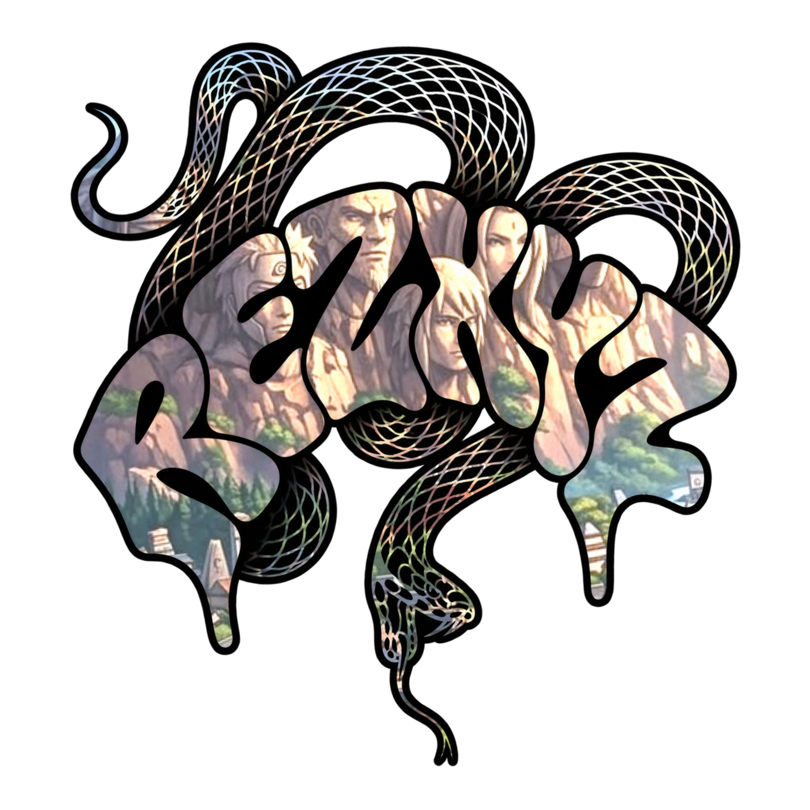

R4 KROCO
HSI MAX • CONTENT CREATOR

ABOUT ME
Content Creator HSI MAX
Pemain HSI dari versi biasa sampai MAX
Creator Batch 1 & Batch 2
Pernah Juara 1 Lomba Cinematic
Adminnya ganteng parah
HSI MAX PLAYER
Pemain HSI dari versi biasa sampai MAX
Creator Batch 1 & Batch 2
Pernah Juara 1 Lomba Cinematic
Adminnya ganteng parah